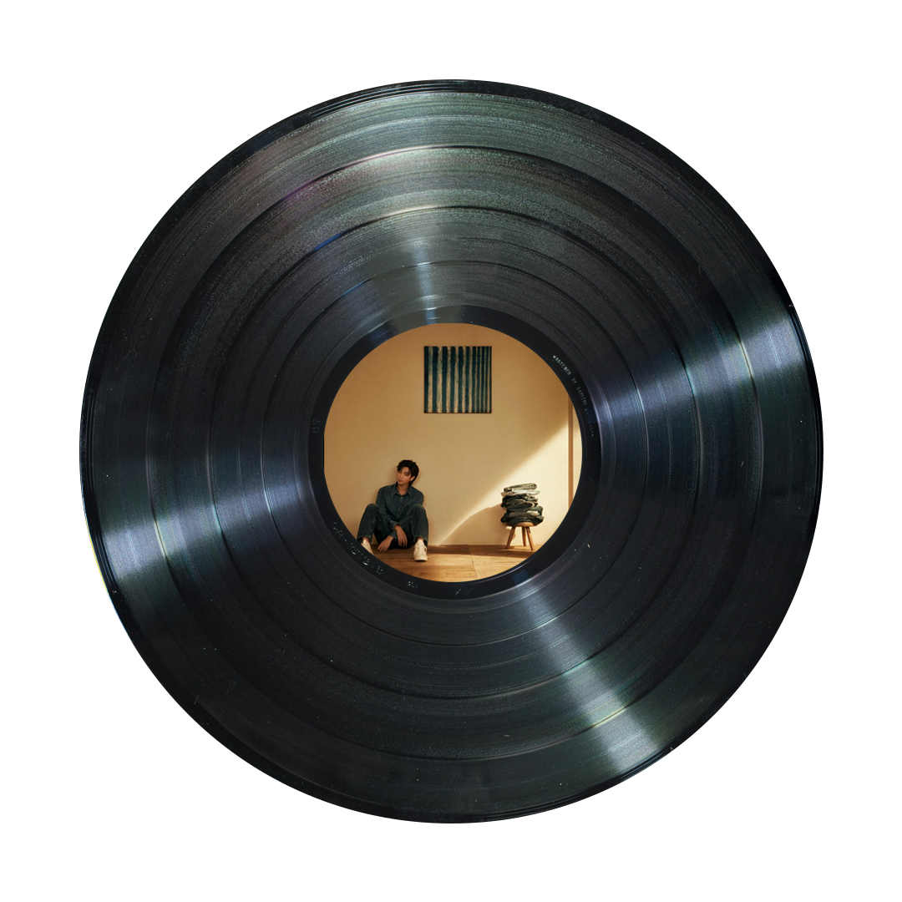

들꽃놀이, RM(w.조유진)

Flower field, that's where I'm at
Open land, that's where I'm at
No name, that's what I have
No shame, I'm on my grave
두 발이 땅에 닿지 않을 때
당신의 마음이 당신을 넘볼 때
꿈이 나를 집어삼킬 때
내가 내가 아닐 때
그 모든 때
불꽃을 나는 동경했었네
그저 화려하게 지고 싶었네
시작의 전부터 나 상상했었지
끝엔 웃으며 박수 쳐 줄 수 있길
나 소원했었네 믿었던 게 다 멀어지던 때
이 모든 명예가 이젠 멍에가 됐을 때
이 욕심을 제발 거둬가소서 어떤 일이 있어도
Oh, 나를 나로 하게 하소서
Oh everyday and every night
Persistin' pain and criminal mind
내 심장소리에 잠 못 들던 밤
창밖에 걸린 청승맞은 초승달
I do wish me a lovely night
내 분수보다 비대해진 life
저기 날아오르는 풍선을 애써 쥐고
따져 물어 대체 지금 넌 어디에?
Where you go? Where's your soul
Yo where's your dream?
저 하늘에 흩어질래
Light a flower, flowerwork
Flower, flowerwork
저 하늘에 눈부시게
Light a flower, flowerwork
Flower, flowerwork
그 어디까지가 내 마지막일까?
전부 진저리 나, 하나 열까지 다
이 지긋지긋한 가면은 언제 벗겨질까?
Yeah me no hero, me no villain
아무것도 아닌 나
공회전은 반복돼 기억들은 난폭해
난 누워 들판 속에 시선을 던져 하늘 위에
뭘 원했었던 건지? 이제 기억이 안 나
얻었다 믿었던 모든 행복은 겨우 찰나
Yeah, I been goin', no matter what's in front
그게 뭐가 됐건
새벽의 옷자락을 붙잡고
뭔가 토해내던 기억
목소리만 큰 자들의 사회
난 여전히 침묵을 말해
이건 방백, 완숙한 돛단배
모든 오해 편견들에 닿게
반갑지 않아 너의 헹가래
내 두 발이 여기 땅 위에 (ayy)
이름도 없는 꽃들과 함께
다신 별에 갈 수 없어 I can't
발밑으로 I just go
목적 없는 목적지로 슬픈 줄도 모르고
그림자마저 친구로 I be gone
저 하늘에 흩어질래
Light a flower, flowerwork
Flower, flowerwork
저 하늘에 눈부시게
Light a flower, flowerwork
Flower, flowerwork
문득 멈춰보니 찬란한 맨발
원래 내 것은 아무것도 없었지
And don't tell me like you gotta be someone
난 절대 그들처럼 될 수 없으니
(light a flower)
그래 내 시작은 시
여태껏 날 지켜온 단 하나의 힘과 dream
(light a flower)
타는 불꽃에서 들꽃으로 소년에서 영원으로
나 이 황량한 들에 남으리
Ah, 언젠가 나 되돌아가리
저 하늘에 흩어질래
Light a flower, flowerwork
Flower, flowerwork
저 하늘에 눈부시게
Light a flower, flowerwork
Flower, flowerwork
Flower field, that's where I'm at
Open land, that's where I'm at
No name, that's what I have
No shame, I'm on my grave
두 발이 땅에 닿지 않을 때
당신의 마음이 당신을 넘볼 때
꿈이 나를 집어삼킬 때
내가 내가 아닌 때
그 모든 때